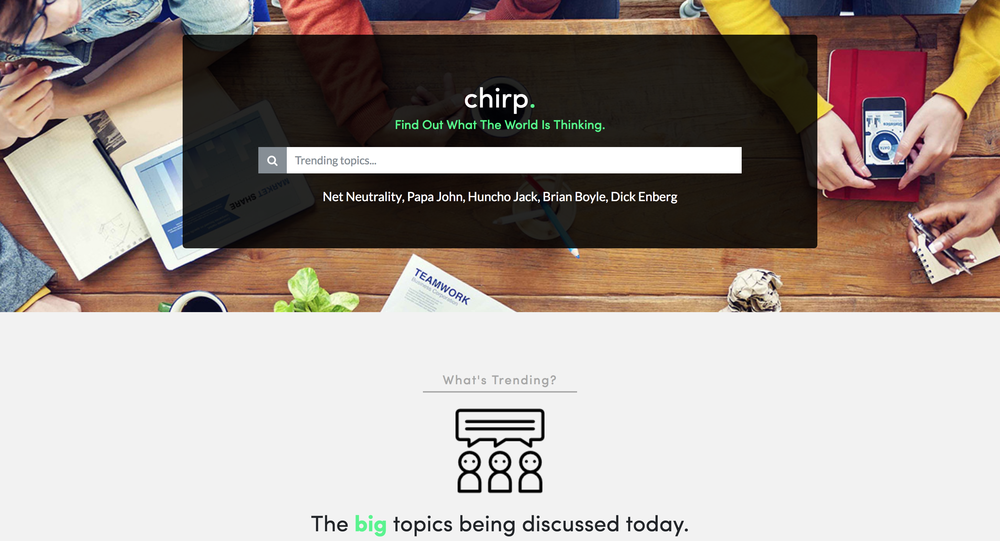
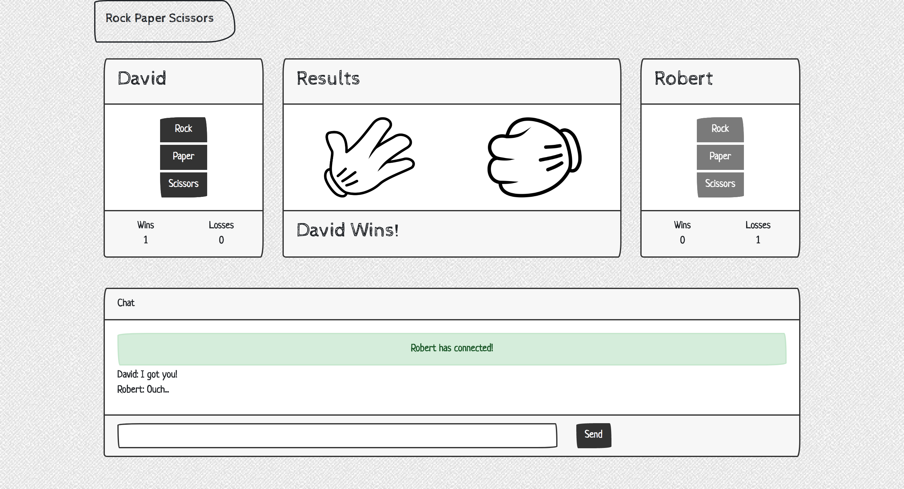
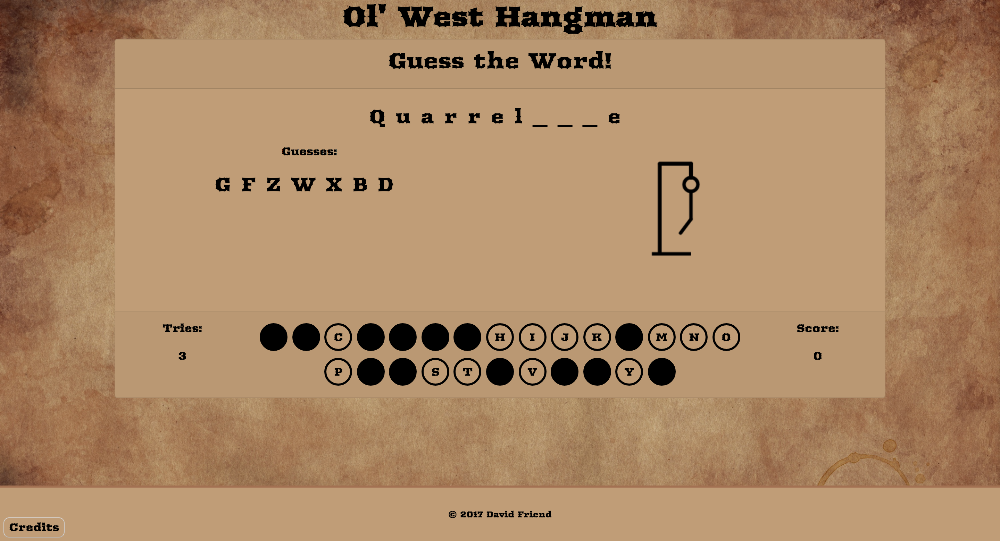
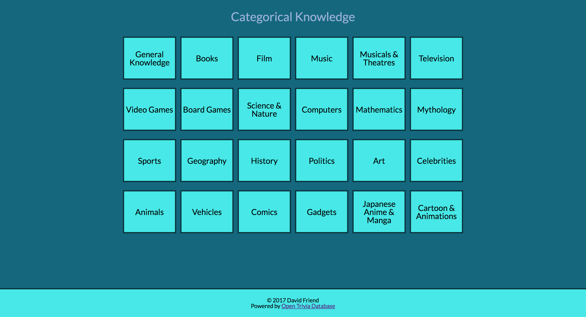
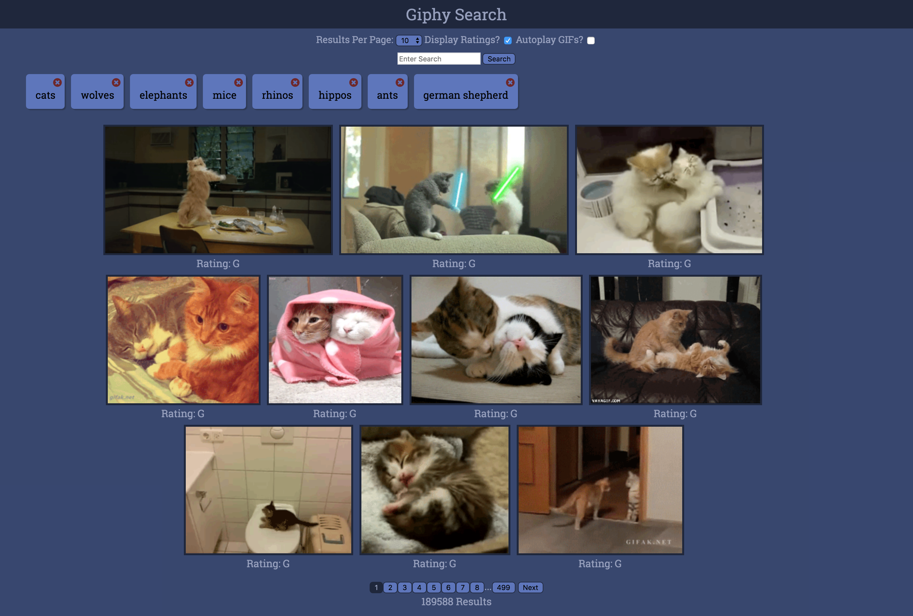
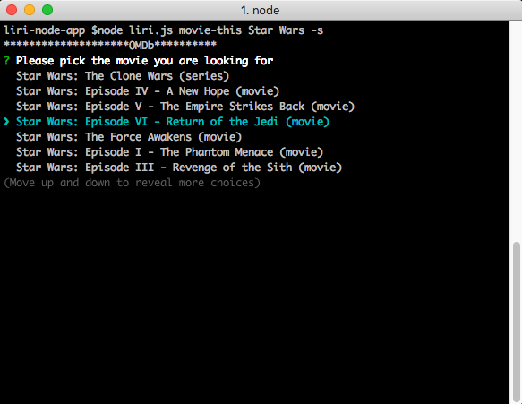

Hey there, my name is David Friend!
I
About Me
Web Developer able to implement and design a full stack of technologies, from front-end to back-end, to create websites and web applications. Able to quickly learn new technologies and skills. Studied at University of Richmond Full-Stack Developer Bootcamp.
Skills
Portfolio
Twitter Sentiment Analysis
This was a team project in which we created a site to analyze sentiment on topics being discussed on Twitter. It displays trending topics for the city, state entered and you can also search for any topic you wish. It then runs all the tweets returned through a sentiment analysis API to get the overall sentiment about the topic. Utilizes Node.js for Twitter authentication and request handling.
Multiplayer Rock-Paper-Scissors
This is a real-time multiplayer rock paper scissors game utilizing Firebase for matchmaking. It has support for multiple ongoing matches utilizing a match ID system, as well as chat and win/loss tracking while in a match.
Hangman
This is a classic hangman game with a stylish western theme and sound effects. It uses the HTML5 canvas in order to draw a stick figure as the user gets letters incorrect. Features mobile responsive design with a provided keyboard for ease of use for mobile players or desktop users who do not wish to use their keyboard for entry.
Categorical Knowledge
This is a trivia game with category choices with 10 random questions presented to the user based on their category choice. The questions and categories and populated dynamically through OpenTriviaDB.
Giphy Search
This is a gif search site which interacts with the Giphy API to retrieve the gifs. It offers various options such as autoplaying gifs, displaying gif ratings, and number of gifs to display per page. It also makes use of local storage in order to save the users searches for ease of access later by creating buttons for each search.
Liri Node
This is a command line node application for interacting with Twitter, Spotify, and OMDb APIs. It makes use of inquirer node module in order to provide a clean user experience. Allows for the searching of movies on OMDb and displaying details about the movie. Also allows for searching of tracks on Spotify and finding details and a preview link to the song. The Twitter portion will display the last twenty tweets by the user or anyone they are following.'